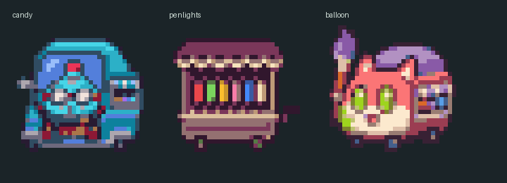

HOLOCRAWL · 소형 시설 광장형 초안184
작은 광장에 판매차 하나
캔디차·응원봉 가판대·풍선차는 각각9×9칸 광장에2×2칸 크기로 배치했습니다. 벤치와 작은 화단을 하나씩 두고 중앙 통로를 비웠습니다. 세 장면은 개별 배치 예시입니다.
준비 중…
소형 판매차 도트 확대 보기

32px 타일 · 그림을 누르면2배 정수 배율로 확대됩니다. 브라우저 도트·배치 검토본이며 실제 게임 삽입은 후속 작업입니다.
동선 검사 · 이전 차고 시안